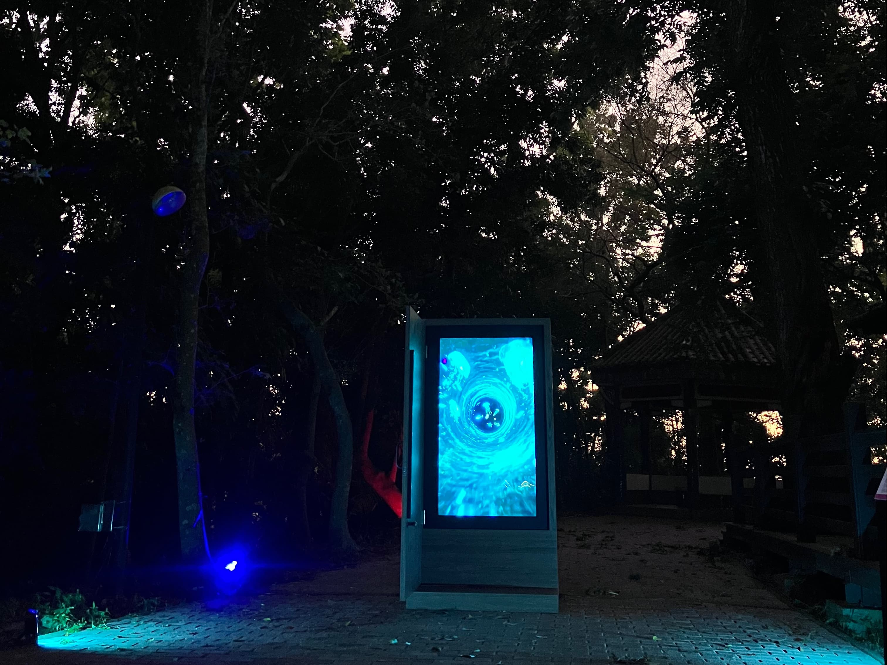
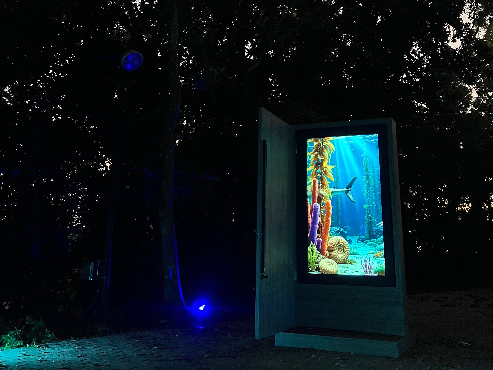
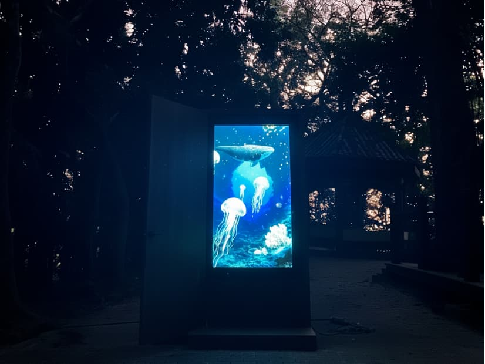
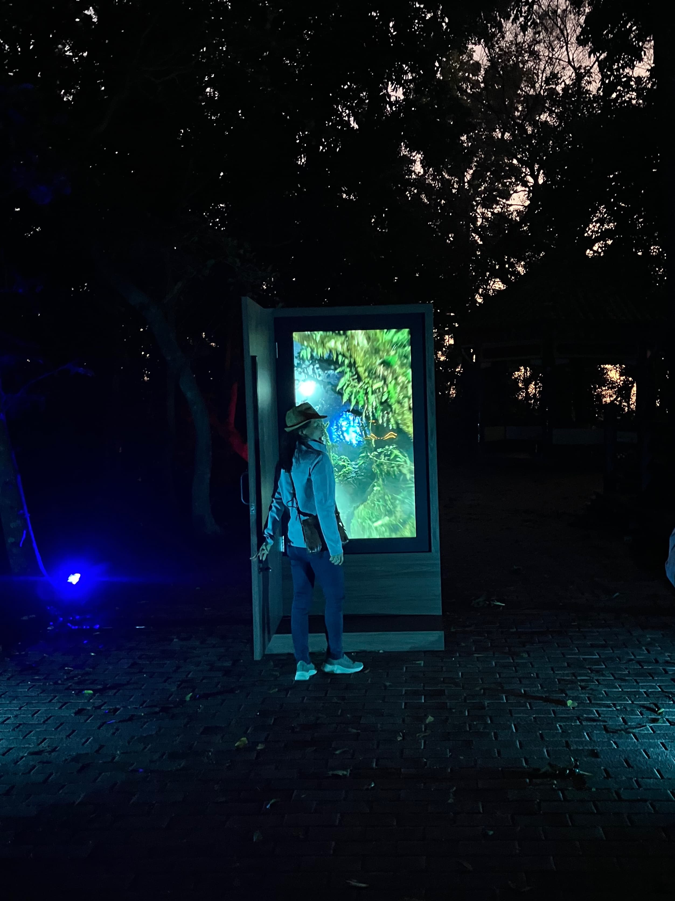
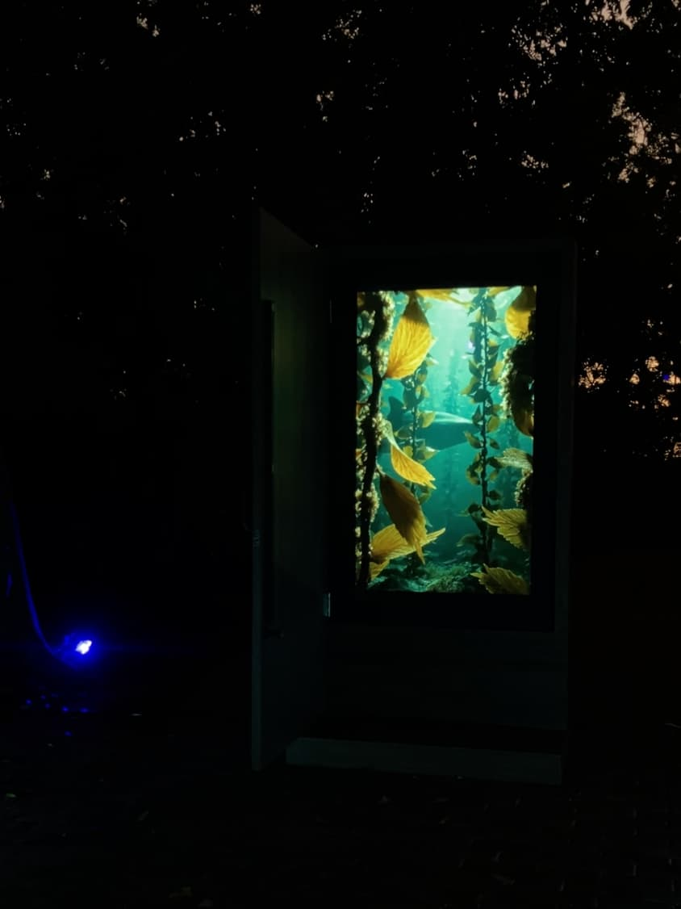

×
Immersive Installation • 2025





Longci is known for the Gutingkeng Formation mudstone, once deep-sea sediments uplifted by orogeny into a rare badlands landscape. The infertile, erosion-prone slopes form stark cliffs while sustaining fragile ecosystems such as Niupu Farm Pond and Longji. Visible gravel layers testify to geological shifts around five million years ago, making Longci a key site for studying Taiwan’s geological and ecological evolution and now designated as a national geopark and nature reserve. The Portal was developed within this context. A door that can be opened forms the installation’s core, symbolizing human imagination of time, space, and the unknown. When visitors open the door, they encounter imagery that evokes an ancient seabed, accompanied by low-frequency flowing sound, briefly suspending reality and entering a perceptual experience of strata, ocean, and time.
Drawing on locally recorded environmental sounds and the idea of “sonic archaeology,” the artist imagines how Longci might have sounded across different geological eras. The work does not reconstruct a single historical scene; instead, it juxtaposes imagined ancient ocean soundscapes with present-day mountain and forest sounds, forming a time sequence that spans millions of years and foregrounds the land’s continual transformation. Through a simple, direct interaction, The Portal turns abstract geological time into a bodily experience, responding to contemporary concerns about environmental change and land protection. It invites viewers to reconsider what this landscape once was, and how today’s choices shape the memories left for the future. The artist’s long-term focus on sound, space, and social change extends here into an environmental inquiry that lets audiences stand briefly at a confluence of time, listening to the dialogue between mountain and sea.